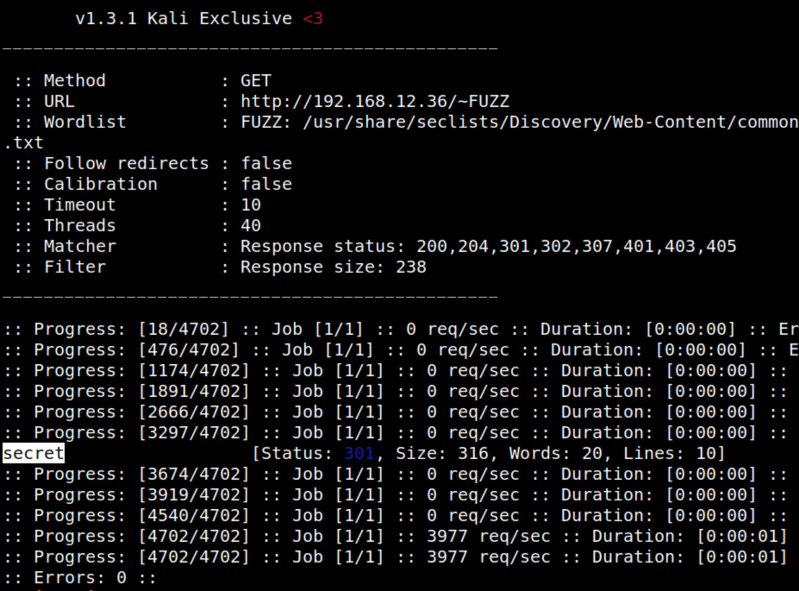
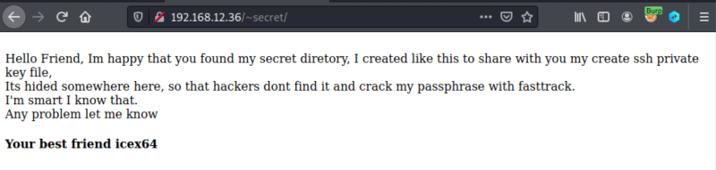
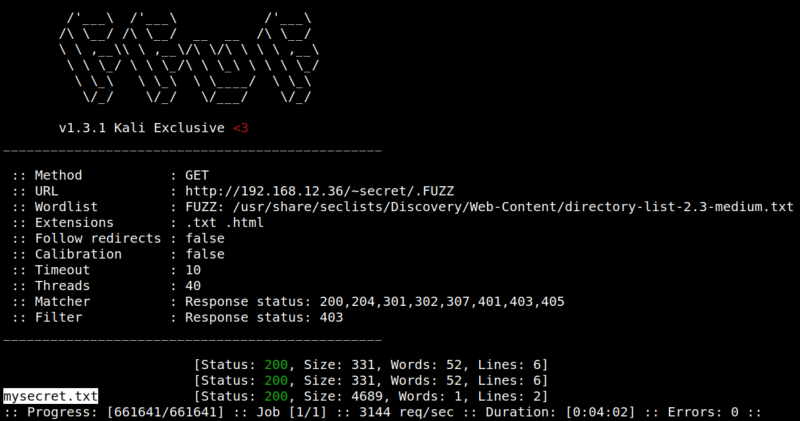

3.1 Fuzz to gain some additional information
You need to figure out what the paramater on the URL http://192.168.12.36/~FUZZ
1. Run on your Kali Machine the following command.
$ffuf -c -w /usr/share/seclists/Discovery/Web-Content/common.txt -u http://192.168.12.36/~FUZZ -fs 238
Output:

There's a hiden directory called “secret”.
2. Navigete to http://192.168.12.36/~secret.

The author is sharing some information related to SSH private key file related to user “icex64”.
3. Fuzz again the (~secret) directory.
$ffuf -c -ic -w /usr/share/seclists/Discovery/Web-Content/directory-list-2.3-medium.txt -u 'http://192.168.12.36/~secret/.FUZZ' -fc 403 -e .txt,.html
Output:

There's a hidden file called “mysecret.txt”.